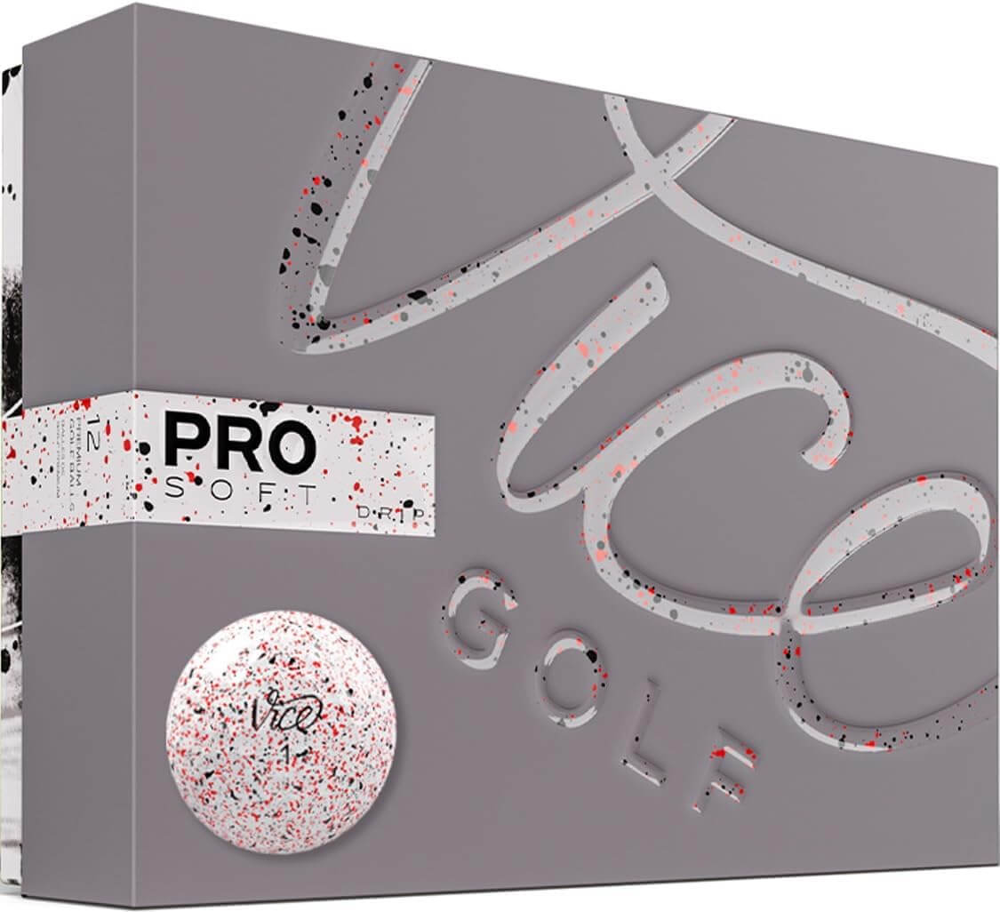
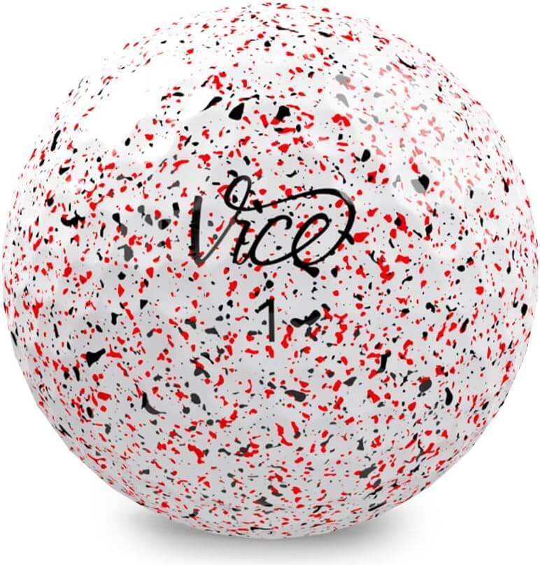
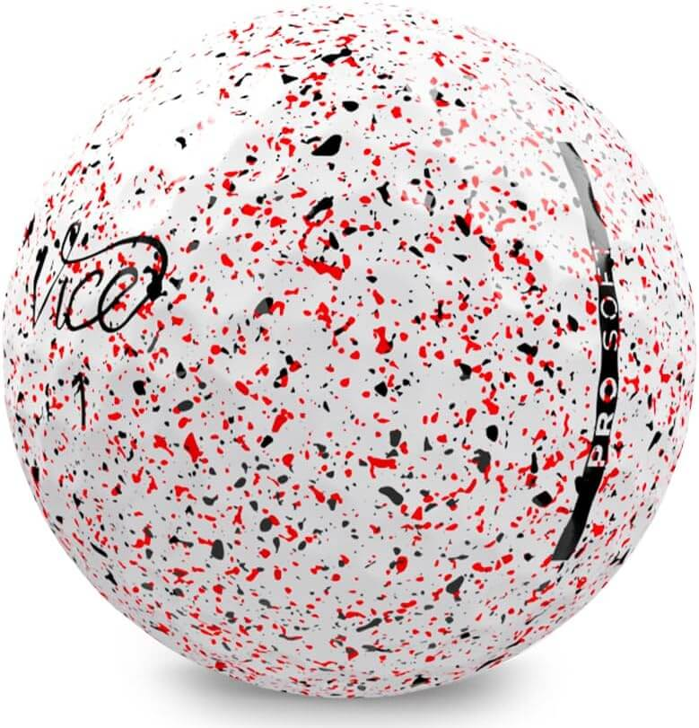
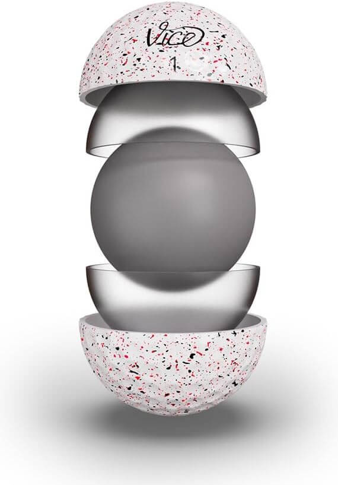

Pro V1 is the optimal premium performance choice for most players, and the most played ball model in golf. The Pro V1 is the choice of Scottie Scheffler, Jessica Korda and Max Homa, to name a few. Pro V1 has a softer feel, less spin and flatter trajectory than Pro V1x, which makes it the preferred model for players who like exceptionally long distance, the ability to flight shots, and score with precision and touch.
Link to provider
Features:
Mid Flight Trajectory
Maximum Short Game Spin
Soft Feel
VICE Pro Soft Golf Balls - $34.51




Vice Golf offers premium golf balls for unbeatable prices. The golf balls are engineered in Germany and feature sophisticated technology and unique design. Without golf balls, there is no golf. Keeping plenty of golf balls in your bag is an essential part of the game, especially in those unfortunate moments in the rough, sand or water. Our online golf ball selection offers several types of golf balls: professional, womens golf balls, printed golf balls, color golf balls, and novelty options. Plus, with our in-house customization capabilities, you can personalize your balls with your name or logo. Explore our many options to find the perfect golf ball for your game!
Link to provider